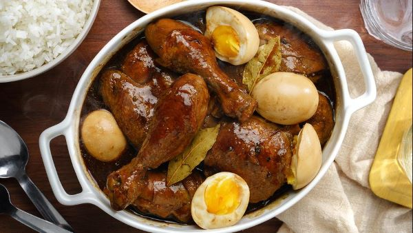

Home
About
Categories
Contact
Adobo

Ingredients
2 lbs chicken
3 pieces dried bay leaves
8 tablespoons soy sauce
4 tablespoons white vinegar
5 cloves garlic
1 1/2 cups water
3 tablespoons cooking oil
1 teaspoon sugar
1/4 teaspoon salt
1 teaspoon whole peppercorn
Procedures
Combine chicken, soy sauce, and garlic in a large bowl. Mix well. Marinate the chicken for at least 1 hour. Note: the longer the time, the better
Heat a cooking pot. Pour cooking oil.
When the oil is hot enough, pan-fry the marinated chicken for 2 minutes per side.
Pour-in the remaining marinade, including garlic. Add water. Bring to a boil
Add dried bay leaves and whole peppercorn. Simmer for 30 minutes or until the chicken gets tender
Add vinegar. Stir and cook for 10 minutes.
Put-in the sugar, and salt. Stir and turn the heat off.Serve hot. Share and Enjoy!
About Us
Kyle Angelo Beltran